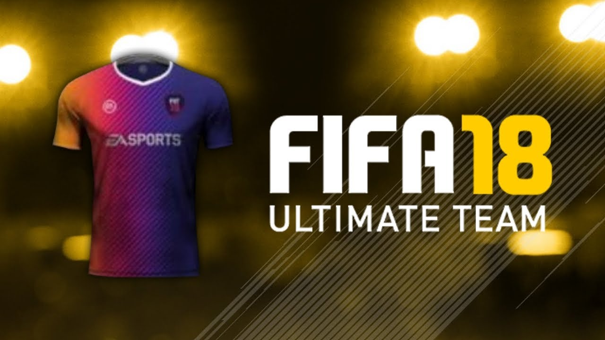

Ik hou erg veel van gamen en van voetbal dus dan is Fifa het perfecte spel voor mij. Ik speel al Fifa vanaf 2004 en koop nog steeds elk jaar de nieuwe Fifa. Fifa begon pas echt leuk teworden toen ze in 2009 ulitimate team introduceerde. dat is een game mode waar mee je een eigen club kan samen stellen.
Je kan verschillende spelers, managers, shitrjes, balle en stadions kopen van andere spelers. je speelt natuurlijk online in devisies tegen anderen spelers maar je kan ook offline divisies spelen. door dat te doen verdien je geld waar door je jou team weer kan gaan verbeteren. Bij het samen stellen van je team moet je wel goed opletten want sommige spelers kunnen niet samen spelen dat komt door dat ze niet uit het zelfde land of competitie komen.
Wat maakt het zo leuk?. Je kan altijd tegen andere mensen spelen online en offline, tegen je vrienden of familie. Niks voelt lekkerder dan je vrienden te verslaan met een potje Fifa.
Er zijn natuurlijk ook meer game modes dan Fut en aftrap. Zo kan je ook The journy spelen dat is een verhaal lijn over een jonge die prof voetballer wordt en jij maakt voor hem de keuzes. Daarnaast heb je carriere mode daar kan je je eigen speler samen stellen en besturen en zo er voor zorgen dat die bij een top club terecht komt, ook heb je manager mode dan speel je als een maneger en moet je een zo goed mogelijk team samen stellen het is een beetje zoals fut maar dan offline.